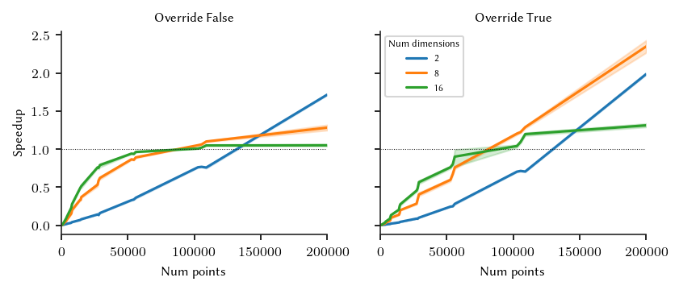
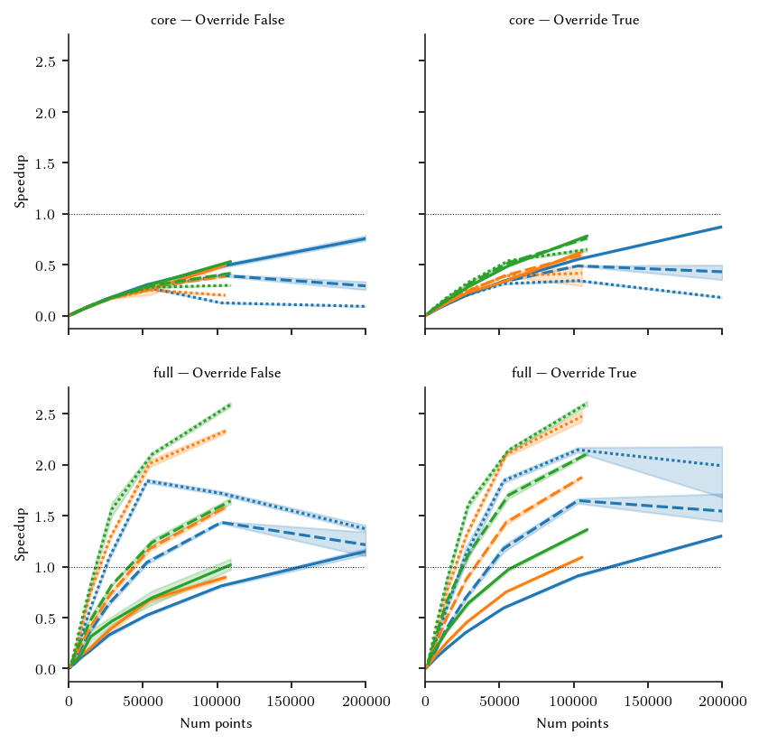
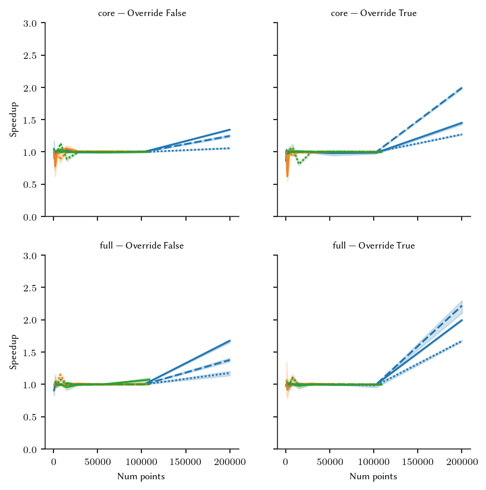

Multiprocessing Behaviour
FLASC’s branch detection step and HDBSCAN*’s core distance computation can run in parallel. Due to the memory bound nature of the implementation and the overhead + copy costs of joblib’s loky multiprocess backend, running multiple processes is only beneficial for larger datasets.
This notebook investigates at which sizes multiprocessing becomes beneficial to find a good default behaviour. Some parts of FLASC are re-implemented here to investigate the branch-detection step and core-distance step on their own. Unlike HDBSCAN*, FLASC will respect the specified num_jobs parameter making it very easy to override the default behaviour.
Setup
This cell loads the libraries required to run this notebook.
[1]:
%load_ext autoreload
%autoreload 2
[1]:
import time
import itertools
import numpy as np
import pandas as pd
from tqdm import trange
from sklearn.utils import shuffle
from joblib.externals.loky import get_reusable_executor
from flasc import FLASC
import seaborn as sns
import matplotlib.pyplot as plt
from _plotting import *
%matplotlib inline
palette = configure_matplotlib()
Datasets
The same dataset generation procedure is used as for the Computational Cost comparison. Clusters are generated using a varying number of random walks starting from the same position. Multiple clusters are positioned at uniform random positions sampled from a space that fits 5 times the specified number of clusters. These datasets result in non-trivially structured data, which should provide a more useful description of FLASC’s multi-processing behaviour.
[2]:
def generate_cluster(
n_dims=2, n_walks=5, walk_length=50, std_step=0.1
):
"""Generates a cluster by repeating a random walk from (0,0)."""
# The possible directions
vectors = np.eye(n_dims)
# Output collection
points = []
# Sample random walks
for r in range(n_walks):
directions = np.random.choice(np.arange(n_dims), walk_length)
lengths = np.random.normal(0, std_step, (walk_length, 1))
steps = vectors[directions] * lengths
pts = np.cumsum(steps, axis=0)
points.append(pts)
# Add noise
points = np.concatenate(points)
return points
def generate_clusters(n_clusters=2, n_dims=2, min_dist=1, n_walks=5):
# Uniform random samples within volume spaced to fit 2*n_clusters
extra_spacing_factor = 5
volume = n_clusters * (min_dist**n_dims)
length = np.power(extra_spacing_factor * volume, 1./n_dims)
coords = np.random.uniform(high=length, size=(n_clusters, n_dims))
# Perform random walks at each coord
points = np.concatenate([
generate_cluster(n_dims=n_dims, n_walks=n_walks) + coord
for coord in coords
])
# Create labels and return
y = np.repeat(np.arange(n_clusters), 50*n_walks)
return shuffle(points, y)
We generated 5 data sets for each combination of: - Number of dimensions - Number of clusters - Number of walks per cluster
The cluster radius values, which indicate the 95 percentile distance from a cluster’s centor to its points, are copied from the Computational Cost comparison notebook.
[3]:
repeats = list(range(5))
num_dims = [2, 8, 16]
cluster_radius = [0.95555435, 0.80832393, 0.7837516]
num_clusters = np.round(np.exp(np.linspace(np.log(2), np.log(800), 10)))
num_walks = np.asarray([5, 10, 20])
params = pd.DataFrame([
(r, ds[0], ds[1], c, w, c * w * 50)
for r, ds, c, w in itertools.product(
repeats,
zip(num_dims, cluster_radius),
num_clusters,
num_walks
) if c * w * 50 <= 200000
], columns=['repeat','num_dims', 'min_dist', 'num_clusters', 'num_walks', 'num_points'])
params['X'], params['y'] = zip(*[
generate_clusters(
n_dims=int(params.num_dims[i]),
min_dist=float(params.min_dist[i]),
n_clusters=int(params.num_clusters[i]),
n_walks=int(params.num_walks[i])
)
for i in trange(params.shape[0])
])
params.to_pickle('./data/generated/threading_comparison_datasets.pickle')
Core distances
The first step that can benefit from multiprocessing is finding the point’s core distances and neighbours. In the cell below, we extracted this steps implementation from the main FLASC function to analyze its run time separately from the other steps. (cell hidden in docs)
In addition to the dataset parameters, we vary whether clusters are overridden in this parameter sweep, because with overriden clusters only part of the HDBSCAN* algorithm is evaluated.
[6]:
# Parameter values to compare
num_jobs = [1, 4]
override_clusters = [True, False]
# Create single data frame with combinations
sweep = pd.DataFrame([
(d, c, w, c * w * 50, j, o)
for d, c, w, j, o in itertools.product(
num_dims,
num_clusters,
num_walks,
num_jobs,
override_clusters
) if c * w * 50 <= 200000
],
columns=[
'num_dims', 'num_clusters', 'num_walks', 'num_points',
'num_jobs', 'override_clusters'
]
)
id_vars = sweep.columns.to_list()
To make sure the multi-processing pools are not reused, we force a shutdown before calling the timed function. Essentially, this assumes a cold-run where the threading pool is not initialized yet.
[7]:
def measure_setting(p):
"""Computes the run times of the given setting"""
num_repeats = len(repeats)
times = np.nan * np.ones(num_repeats, dtype=np.double)
# Evaluate num_repeat times
for i in range(num_repeats):
# Extract the dataset
param_i = params[
(params.num_dims == p.num_dims) &
(params.num_clusters == p.num_clusters) &
(params.num_walks == p.num_walks) &
(params.repeat == i)
].index[0]
X = params.loc[param_i, 'X']
# Clean up processing backend
get_reusable_executor().shutdown(wait=True)
# Run the fit
start = time.perf_counter()
_hdbscan_linkage(X, num_jobs=p.num_jobs, run_override=p.override_clusters)
end = time.perf_counter()
# Store run time and num clusters
times[i] = end - start
return times
The cell below actually runs the parameter sweep in about 2 hours and 40 minutes.
[8]:
sweep['run_times'] = [ measure_setting(sweep.iloc[i]) for i in trange(sweep.shape[0]) ]
sweep.to_pickle('./data/generated/thread_scaling_core_dists.pickle')
100%|██████████████████████████████████████████████████████████████████████████████| 300/300 [2:40:05<00:00, 32.02s/it]
Results
In the cells below, we try to find out at which data-set sizes multi-processing becomes beneficial. First, we load the data files, so it is possible to recreate the figures without running the entire parameter sweep.
[9]:
params = pd.read_pickle('./data/generated/threading_comparison_datasets.pickle')
sweep = pd.read_pickle('./data/generated/thread_scaling_core_dists.pickle')
repeats = np.arange(len(sweep.run_times[0]))
sweep['repeats'] = [repeats for _ in range(sweep.shape[0])]
sweep = sweep.explode(['run_times', 'repeats'])
Then, we compute the speedup between 1 job and 4 jobs for all datasets.
[ ]:
pivotted = pd.pivot(sweep,
index=[
'num_dims','num_clusters', 'num_walks','num_points',
'override_clusters', 'repeats'
],
columns='num_jobs',
values='run_times'
)
one_job = pivotted[1].to_numpy()[None].T
multi_jobs = pivotted.iloc[:, 1:]
speedup = (one_job / multi_jobs).reset_index()
speedup = speedup.rename(columns={
'repeat': 'Repeat',
'num_dims': 'Num dimensions',
'num_clusters': 'Num clusters',
'num_walks': 'Num walks',
'num_points': 'Num points',
'override_clusters': 'Override clusters',
'num_detected_clusters': 'Num detected clusters',
'num_jobs': 'Num jobs',
4: 'Speedup'
})
Now, we can plot the average speedup for the different data-set and cluster sizes:
[33]:
g = sns.FacetGrid(
speedup,
col='Override clusters',
col_order=[False, True],
)
g.map_dataframe(
sns.lineplot,
x='Num points',
y='Speedup',
hue='Num dimensions',
palette='tab10'
)
for a in plt.gcf().axes:
a.plot([0, 200000], [1, 1], 'k:', linewidth=0.5)
a.set_xlim([0, 200000])
plt.sca(a)
l = plt.legend(title='Num dimensions')
adjust_legend_subtitles(l)
g.set_titles('Override {col_name}')
size_fig(1, aspect=0.618*2/3)
# plt.xscale('log')
plt.subplots_adjust(hspace=0.2, wspace=0.2)
plt.show()

For these datasets, HDBSCAN*’s threading limit of +/- 16.000 points is too low. Benefits only start to happend from 50.000 points. For our implementation, we use 125.000 points as conservative threshold, ensuring no slow-downs occur on 2-dimensional datasets.
The raw numbers:
[31]:
speedup.groupby(by=[
'Num clusters', 'Override clusters', 'Num dimensions'
]).Speedup.mean().reset_index().pivot(
index=['Override clusters', 'Num dimensions'],
values='Speedup',
columns='Num clusters'
)
[31]:
| Num clusters | 2.0 | 4.0 | 8.0 | 15.0 | 29.0 | 56.0 | 109.0 | 211.0 | 411.0 | 800.0 | |
|---|---|---|---|---|---|---|---|---|---|---|---|
| Override clusters | Num dimensions | ||||||||||
| False | 2 | 0.005177 | 0.010299 | 0.022059 | 0.043019 | 0.088026 | 0.187841 | 0.412534 | 0.548403 | 0.761539 | 1.715687 |
| 8 | 0.015312 | 0.033583 | 0.098570 | 0.195107 | 0.367741 | 0.603581 | 0.830696 | 0.964007 | 1.051215 | 1.281790 | |
| 16 | 0.024017 | 0.055282 | 0.136907 | 0.281519 | 0.503949 | 0.733526 | 0.915181 | 0.980591 | 1.007645 | 1.050434 | |
| True | 2 | 0.002616 | 0.005449 | 0.011458 | 0.023468 | 0.051625 | 0.133886 | 0.346752 | 0.478879 | 0.703685 | 1.986652 |
| 8 | 0.007089 | 0.016132 | 0.046569 | 0.097261 | 0.208068 | 0.410467 | 0.748709 | 0.910315 | 1.203641 | 2.349060 | |
| 16 | 0.010657 | 0.025276 | 0.063608 | 0.139045 | 0.300975 | 0.529191 | 0.817763 | 0.928171 | 1.040766 | 1.312453 |
Branch Detection
The branch detection step can be performed in parallel for each cluster separately. Here we analyze whether that has a benefit separately from the other steps. The functions below implements all FLASC steps that occur before the branch detection step and the branch detection step on its own. Joblib’s Memory caching is used to speed up the parts that are not measured. This requires roughly 20Gb free disk space, which is cleaned up when the sweep completes. (code cell hiddin in docs)
[5]:
import tempfile
from joblib.parallel import Parallel
from joblib.memory import Memory
tempdir = tempfile.TemporaryDirectory()
memory = Memory(tempdir.name, verbose=0)
FLASC’s main parameters are varied so we can find a good threshold for each variant of the algorithm: - branch detection method, - cluster override
FLASC’s generic algorithm variant, which computes the full distance matrix is not tested here, as no speedups were observed with that variant previously.
[7]:
# Parameter values to compare
branch_detection_method = ['core', 'full']
override_clusters = [True, False]
num_jobs = [1, 4]
# Create single data frame with combinations
sweep = pd.DataFrame([
(d, c, w, c * w * 50, j, b, o)
for d, c, w, j, b, o in itertools.product(
num_dims,
num_clusters,
num_walks,
num_jobs,
branch_detection_method,
override_clusters
) if c * w * 50 <= 200000
],
columns=[
'num_dims', 'num_clusters', 'num_walks', 'num_points',
'num_jobs', 'branch_detection_method', 'override_clusters'
]
)
id_vars = sweep.columns.to_list()
As before, the loky backend is shutdown between runs to make sure no caching benefits influence the comparison.
[8]:
def measure_setting(p):
"""Computes the run times of the given setting"""
num_repeats = len(repeats)
times = np.nan * np.ones(num_repeats, dtype=np.double)
# Evaluate num_repeat times
for i in range(num_repeats):
# Find data-set index
param_i = params[
(params.num_dims == p.num_dims) &
(params.num_clusters == p.num_clusters) &
(params.num_walks == p.num_walks) &
(params.repeat == i)
].index[0]
# Compute clusters and points
run_generic = False
run_override = p.override_clusters
run_core = p.branch_detection_method == 'core'
preparation = memory.cache(_flasc_clusters)(
param_i, run_generic=run_generic, run_override=run_override
)
# Clean up processing backend
get_reusable_executor().shutdown(wait=True)
# Run the branch detection step
start = time.perf_counter()
_flasc_branches(
*preparation,
run_generic=run_generic,
run_override=run_override,
run_core=run_core,
num_jobs=p.num_jobs
)
end = time.perf_counter()
# Store run time and num clusters
times[i] = end - start
return times
The cell below runs the actual sweep, which takes about 4 hours.
[9]:
sweep['run_times'] = [ measure_setting(sweep.iloc[i]) for i in trange(sweep.shape[0]) ]
sweep.to_pickle('./data/generated/thread_scaling_branches.pickle')
tempdir.cleanup()
100%|██████████████████████████████████████████████████████████████████████████████| 600/600 [4:01:28<00:00, 24.15s/it]
Results
In this section we plot the results from the branch-detection sweep. The data-files are read in again so that the figures can be re-created without running the sweep.
[44]:
params = pd.read_pickle('./data/generated/threading_comparison_datasets.pickle')
sweep = pd.read_pickle('./data/generated/thread_scaling_branches.pickle')
repeats = np.arange(len(sweep.run_times[0]))
sweep['repeats'] = [repeats for _ in range(sweep.shape[0])]
sweep = sweep.explode(['run_times', 'repeats'])
The speedup from 1 to 4 jobs is computed:
[ ]:
pivotted = pd.pivot(sweep,
index=[
'num_dims', 'num_clusters', 'num_walks', 'num_points',
'branch_detection_method', 'override_clusters', 'repeats'
],
columns='num_jobs',
values='run_times'
)
one_job = pivotted[1].to_numpy()[None].T
multi_jobs = pivotted.iloc[:, 1:]
speedup = (one_job / multi_jobs).reset_index()
speedup = speedup.rename(columns={
'repeat': 'Repeat',
'num_dims': 'Num dimensions',
'num_clusters': 'Num clusters',
'num_walks': 'Num walks',
'num_points': 'Num points',
'branch_detection_method': 'Branch detection',
'override_clusters': 'Override clusters',
'num_jobs': 'Num jobs',
4: 'Speedup'
})
The figure below shows the speedups for the different FLASC parameter combinations and dataset dimensions. Again, 2D datasets benefit the least from multiprocessing.
[43]:
g = sns.FacetGrid(
speedup,
row='Branch detection',
col="Override clusters",
row_order=['core', 'full'],
col_order=[False, True]
)
g.map_dataframe(
sns.lineplot,
x='Num points',
y='Speedup',
hue='Num walks',
style='Num dimensions',
palette='tab10'
)
for a in plt.gcf().axes:
a.plot([0, 200000], [1, 1], 'k:', linewidth=0.5)
a.set_xlim([0, 200000])
g.set_titles('{row_name} | Override {col_name}')
# g.set(ylim=(0, 250))
# plt.xscale('log')
size_fig(1, 1)
plt.subplots_adjust(hspace=0.2, wspace=0.2)
# plt.savefig('./images/threading_best_size.png')
plt.show()

For the core branch detection approach, spinning up multiple processes is not worth it (at this min_samples value), regardless of dataset size. Only when the pool is re-used from the core distances step, could there be a benefit, but even that appears unlikely. For the full branch detection method, multiprocessing becomes beneficial from around 150.000 data points. However, because a threadpool is created for the core distance step at 125.000 points, re-using that pool is likely beneficial
already. So, in the final implementation, we disable the thread pool for the branch detection step when the core detection method or generic variant of the algorithm is used. Otherwise, the pool from the core distances step is re-used.
It can be worth enabling multiprocessing manually for datasets with tens of thousands of points if they have more than 2 dimensions.
[13]:
speedup.groupby(by=[
'Num clusters', 'Num walks', 'Override clusters', 'Branch detection', 'Num dimensions'
]).Speedup.mean().reset_index().pivot(
index=['Branch detection', 'Override clusters', 'Num walks', 'Num dimensions'],
values='Speedup',
columns='Num clusters'
)
[13]:
| Num clusters | 2.0 | 4.0 | 8.0 | 15.0 | 29.0 | 56.0 | 109.0 | 211.0 | 411.0 | 800.0 | |||
|---|---|---|---|---|---|---|---|---|---|---|---|---|---|
| Branch detection | Override clusters | Num walks | Num dimensions | ||||||||||
| core | False | 5 | 2 | 0.003159 | 0.005944 | 0.014465 | 0.025352 | 0.049430 | 0.090837 | 0.173306 | 0.303712 | 0.483539 | 0.755368 |
| 8 | 0.002931 | 0.007304 | 0.014776 | 0.027717 | 0.051618 | 0.096351 | 0.173453 | 0.267089 | 0.394351 | 0.291465 | |||
| 16 | 0.002928 | 0.007461 | 0.015128 | 0.027281 | 0.051547 | 0.094157 | 0.167719 | 0.277289 | 0.124852 | 0.090819 | |||
| 10 | 2 | 0.005429 | 0.011559 | 0.027093 | 0.049754 | 0.091805 | 0.172753 | 0.255159 | 0.494996 | NaN | NaN | ||
| 8 | 0.005681 | 0.013227 | 0.027950 | 0.054397 | 0.097699 | 0.172399 | 0.284143 | 0.384808 | NaN | NaN | |||
| 16 | 0.005520 | 0.015637 | 0.027964 | 0.051809 | 0.095650 | 0.163954 | 0.251415 | 0.199158 | NaN | NaN | |||
| 20 | 2 | 0.010943 | 0.021226 | 0.051036 | 0.097723 | 0.177076 | 0.307708 | 0.529663 | NaN | NaN | NaN | ||
| 8 | 0.011226 | 0.026767 | 0.052873 | 0.094384 | 0.173779 | 0.294398 | 0.416041 | NaN | NaN | NaN | |||
| 16 | 0.010768 | 0.028713 | 0.055042 | 0.099928 | 0.179951 | 0.278628 | 0.297049 | NaN | NaN | NaN | |||
| True | 5 | 2 | 0.003137 | 0.008425 | 0.016174 | 0.030059 | 0.057410 | 0.106009 | 0.196040 | 0.339635 | 0.551901 | 0.872365 | |
| 8 | 0.003665 | 0.008627 | 0.017128 | 0.032247 | 0.059790 | 0.112970 | 0.202119 | 0.332817 | 0.487964 | 0.430270 | |||
| 16 | 0.003711 | 0.009020 | 0.018092 | 0.033078 | 0.061428 | 0.113519 | 0.196277 | 0.312589 | 0.343147 | 0.177158 | |||
| 10 | 2 | 0.006769 | 0.017592 | 0.034283 | 0.064142 | 0.119286 | 0.220623 | 0.340419 | 0.624888 | NaN | NaN | ||
| 8 | 0.007501 | 0.019264 | 0.038454 | 0.070137 | 0.129781 | 0.236366 | 0.395940 | 0.593900 | NaN | NaN | |||
| 16 | 0.008003 | 0.020320 | 0.040147 | 0.073285 | 0.135198 | 0.244074 | 0.392161 | 0.415146 | NaN | NaN | |||
| 20 | 2 | 0.016858 | 0.043566 | 0.084196 | 0.151690 | 0.281300 | 0.487886 | 0.781616 | NaN | NaN | NaN | ||
| 8 | 0.018425 | 0.047230 | 0.093067 | 0.170709 | 0.306283 | 0.517214 | 0.759545 | NaN | NaN | NaN | |||
| 16 | 0.020348 | 0.051696 | 0.100968 | 0.181717 | 0.325953 | 0.537935 | 0.648758 | NaN | NaN | NaN | |||
| full | False | 5 | 2 | 0.005859 | 0.009929 | 0.027037 | 0.045271 | 0.096476 | 0.169733 | 0.330739 | 0.524932 | 0.811864 | 1.149715 |
| 8 | 0.005682 | 0.015299 | 0.036559 | 0.077567 | 0.170626 | 0.354356 | 0.637906 | 1.042073 | 1.434513 | 1.214936 | |||
| 16 | 0.006155 | 0.017117 | 0.049194 | 0.111786 | 0.266430 | 0.561697 | 1.085606 | 1.842024 | 1.719904 | 1.371313 | |||
| 10 | 2 | 0.018080 | 0.040749 | 0.066864 | 0.121523 | 0.198410 | 0.385023 | 0.674564 | 0.894895 | NaN | NaN | ||
| 8 | 0.014676 | 0.040010 | 0.094555 | 0.207498 | 0.399099 | 0.728690 | 1.175111 | 1.582926 | NaN | NaN | |||
| 16 | 0.017140 | 0.055636 | 0.136961 | 0.332426 | 0.742876 | 1.285111 | 2.011022 | 2.329959 | NaN | NaN | |||
| 20 | 2 | 0.039610 | 0.066367 | 0.128860 | 0.314227 | 0.463832 | 0.693282 | 1.017464 | NaN | NaN | NaN | ||
| 8 | 0.054310 | 0.133418 | 0.262903 | 0.479026 | 0.819095 | 1.236615 | 1.644502 | NaN | NaN | NaN | |||
| 16 | 0.059054 | 0.176911 | 0.427189 | 0.828805 | 1.560656 | 2.101381 | 2.590795 | NaN | NaN | NaN | |||
| True | 5 | 2 | 0.005828 | 0.013195 | 0.028016 | 0.052473 | 0.106243 | 0.193333 | 0.353224 | 0.594588 | 0.909688 | 1.302847 | |
| 8 | 0.005980 | 0.017393 | 0.039808 | 0.083182 | 0.180777 | 0.384853 | 0.693834 | 1.176123 | 1.648200 | 1.545613 | |||
| 16 | 0.006963 | 0.018492 | 0.051550 | 0.116409 | 0.274195 | 0.569178 | 1.115421 | 1.842648 | 2.146585 | 1.990661 | |||
| 10 | 2 | 0.015712 | 0.037300 | 0.072851 | 0.136760 | 0.255589 | 0.454890 | 0.751886 | 1.092214 | NaN | NaN | ||
| 8 | 0.016179 | 0.048635 | 0.114401 | 0.248468 | 0.500768 | 0.884831 | 1.434070 | 1.877409 | NaN | NaN | |||
| 16 | 0.019345 | 0.061627 | 0.150492 | 0.338740 | 0.759894 | 1.317657 | 2.101171 | 2.474793 | NaN | NaN | |||
| 20 | 2 | 0.045825 | 0.116512 | 0.218807 | 0.379507 | 0.642007 | 0.972706 | 1.363354 | NaN | NaN | NaN | ||
| 8 | 0.054985 | 0.168832 | 0.351439 | 0.673266 | 1.121121 | 1.699989 | 2.107128 | NaN | NaN | NaN | |||
| 16 | 0.068774 | 0.196071 | 0.460291 | 0.881114 | 1.608466 | 2.141666 | 2.603280 | NaN | NaN | NaN |
Full implementation
Finally, lets check the full FLASC implementation to validate that the default behaviour does not introduce slow-downs.
[6]:
# Parameter values to compare
branch_detection_method = ['core', 'full']
override_clusters = [True, False]
enable_threading = [True, False]
# Create single data frame with combinations
sweep = pd.DataFrame([
(d, c, w, c * w * 50, j, b, o)
for d, c, w, j, b, o in itertools.product(
num_dims,
num_clusters,
num_walks,
enable_threading,
branch_detection_method,
override_clusters
) if c * w * 50 <= 200000
],
columns=[
'num_dims', 'num_clusters', 'num_walks', 'num_points',
'enable_threading', 'branch_detection_method', 'override_clusters'
]
)
id_vars = sweep.columns.to_list()
[7]:
def measure_setting(p):
"""Computes the run times of the given setting"""
num_repeats = len(repeats)
times = np.nan * np.ones(num_repeats, dtype=np.double)
# Evaluate num_repeat times
for i in range(num_repeats):
# Find data-set index
param_i = params[
(params.num_dims == p.num_dims) &
(params.num_clusters == p.num_clusters) &
(params.num_walks == p.num_walks) &
(params.repeat == i)
].index[0]
X = params.X[param_i]
y = params.y[param_i]
# Compute clusters and points
clusterer = FLASC(
min_samples=10,
min_cluster_size=100,
min_branch_size=20,
allow_single_cluster=True,
override_cluster_labels=y if p.override_clusters else None,
branch_detection_method=p.branch_detection_method,
num_jobs = None if p.enable_threading else 1,
)
# Clean up processing backend
get_reusable_executor().shutdown(wait=True)
# Run the branch detection step
start = time.perf_counter()
clusterer.fit(X)
end = time.perf_counter()
# Store run time and num clusters
times[i] = end - start
return times
The sweep below takes roughly 7 hours.
[8]:
sweep['run_times'] = [ measure_setting(sweep.iloc[i]) for i in trange(sweep.shape[0]) ]
sweep.to_pickle('./data/generated/thread_scaling.pickle')
100%|██████████████████████████████████████████████████████████████████████████████| 600/600 [6:50:00<00:00, 41.00s/it]
Results
In this section we plot the results from the branch-detection sweep. The data-files are read in again so that the figures can be re-created without running the sweep.
[9]:
params = pd.read_pickle('./data/generated/threading_comparison_datasets.pickle')
sweep = pd.read_pickle('./data/generated/thread_scaling.pickle')
repeats = np.arange(len(sweep.run_times[0]))
sweep['repeats'] = [repeats for _ in range(sweep.shape[0])]
sweep = sweep.explode(['run_times', 'repeats'])
The speed up is computed:
[ ]:
pivotted = pd.pivot(sweep,
index=[
'num_dims', 'num_clusters', 'num_walks', 'num_points',
'branch_detection_method', 'override_clusters', 'repeats'
],
columns='enable_threading',
values='run_times'
)
one_job = pivotted[False].to_numpy()
multi_jobs = pivotted[True]
speedup = (one_job / multi_jobs).reset_index()
speedup = speedup.rename(columns={
'repeat': 'Repeat',
'num_dims': 'Num dimensions',
'num_clusters': 'Num clusters',
'num_walks': 'Num walks',
'num_points': 'Num points',
'branch_detection_method': 'Branch detection',
'override_clusters': 'Override clusters',
True: 'Speedup'
})
The figures below show the speedup for the different parameter combinations:
[13]:
g = sns.FacetGrid(
speedup,
row='Branch detection',
col="Override clusters",
row_order=['core', 'full'],
col_order=[False, True]
)
g.map_dataframe(
sns.lineplot,
x='Num points',
y='Speedup',
hue='Num walks',
style='Num dimensions',
palette='tab10'
)
g.set_titles('{row_name} | Override {col_name}')
g.set(ylim=(0, 3))
# plt.xscale('log')
size_fig(1, 1)
plt.subplots_adjust(hspace=0.2, wspace=0.2)
# plt.savefig('./images/threading_best_size.png')
plt.show()

This is a reasonable result. There is a noticable speedup for large datasets. For smaller datasets with more dimensions, there is no slowdown. Manually enabling multi-processing would result in more speedups. There is some variation in speedup at smaller datasets, for with no multi-processing occurs. This is likely due to background tasks or other interference.
The raw values are shown below:
[12]:
speedup.groupby(by=[
'Num clusters', 'Num walks', 'Override clusters', 'Branch detection', 'Num dimensions'
]).Speedup.mean().reset_index().pivot(
index=['Branch detection', 'Override clusters', 'Num walks', 'Num dimensions'],
values='Speedup',
columns='Num clusters'
)
[12]:
| Num clusters | 2.0 | 4.0 | 8.0 | 15.0 | 29.0 | 56.0 | 109.0 | 211.0 | 411.0 | 800.0 | |||
|---|---|---|---|---|---|---|---|---|---|---|---|---|---|
| Branch detection | Override clusters | Num walks | Num dimensions | ||||||||||
| core | False | 5 | 2 | 1.048687 | 0.998321 | 0.991910 | 1.004897 | 0.990731 | 1.027229 | 0.994402 | 0.991903 | 1.000755 | 1.343989 |
| 8 | 1.002823 | 0.898074 | 0.988875 | 1.011377 | 1.008605 | 0.998200 | 0.998690 | 1.000843 | 1.002410 | 1.247001 | |||
| 16 | 1.001668 | 0.998073 | 0.998362 | 1.021311 | 1.000981 | 1.000242 | 1.001140 | 1.000171 | 0.998409 | 1.056936 | |||
| 10 | 2 | 0.994004 | 0.775257 | 0.986888 | 1.000605 | 1.053610 | 1.005856 | 1.009160 | 1.000453 | NaN | NaN | ||
| 8 | 0.984689 | 1.014262 | 0.997846 | 0.997620 | 0.998605 | 1.001291 | 1.004902 | 0.997786 | NaN | NaN | |||
| 16 | 1.002216 | 1.000690 | 0.998147 | 0.883028 | 0.998437 | 0.998638 | 1.002251 | 1.000784 | NaN | NaN | |||
| 20 | 2 | 0.999919 | 0.996704 | 1.036251 | 0.995041 | 0.998312 | 0.993591 | 1.000946 | NaN | NaN | NaN | ||
| 8 | 1.015203 | 1.015858 | 1.000028 | 0.997828 | 1.003294 | 1.000881 | 1.005032 | NaN | NaN | NaN | |||
| 16 | 1.001609 | 1.000310 | 1.130976 | 0.891607 | 1.000934 | 0.998499 | 1.000345 | NaN | NaN | NaN | |||
| True | 5 | 2 | 0.858018 | 1.025632 | 1.000907 | 0.993969 | 1.003129 | 1.006935 | 0.993899 | 0.979987 | 0.986470 | 1.449443 | |
| 8 | 0.969761 | 1.016629 | 0.998081 | 0.988468 | 1.008540 | 0.999815 | 0.995208 | 1.001120 | 0.998286 | 1.993373 | |||
| 16 | 0.982635 | 1.006680 | 1.000523 | 1.015217 | 0.997253 | 1.000820 | 0.999782 | 1.001271 | 0.999376 | 1.272039 | |||
| 10 | 2 | 0.981934 | 0.622268 | 1.002810 | 1.017507 | 0.998458 | 0.993172 | 0.999530 | 0.998511 | NaN | NaN | ||
| 8 | 1.008657 | 0.994673 | 0.996742 | 0.988056 | 1.001082 | 1.001694 | 0.999746 | 1.005091 | NaN | NaN | |||
| 16 | 0.998010 | 1.004363 | 1.024920 | 0.935080 | 0.999444 | 0.998022 | 1.004893 | 0.995623 | NaN | NaN | |||
| 20 | 2 | 0.971642 | 0.984365 | 1.008843 | 1.011050 | 1.001648 | 1.000334 | 0.998262 | NaN | NaN | NaN | ||
| 8 | 0.965328 | 1.002476 | 0.999736 | 0.998644 | 1.003580 | 1.002242 | 0.999195 | NaN | NaN | NaN | |||
| 16 | 0.994387 | 1.018864 | 1.067334 | 0.810977 | 0.996211 | 1.005306 | 1.001005 | NaN | NaN | NaN | |||
| full | False | 5 | 2 | 0.902959 | 0.936036 | 1.026920 | 1.024985 | 0.988197 | 0.993021 | 0.999647 | 0.999481 | 0.999064 | 1.675548 |
| 8 | 0.987607 | 0.998359 | 0.995219 | 1.000916 | 1.001613 | 1.000171 | 0.998957 | 1.000638 | 0.999232 | 1.377506 | |||
| 16 | 1.007962 | 0.998622 | 0.999076 | 0.980647 | 1.000885 | 0.998939 | 1.000502 | 0.999154 | 1.000504 | 1.175418 | |||
| 10 | 2 | 1.003720 | 0.995133 | 1.026779 | 0.999799 | 1.003259 | 1.011203 | 0.997672 | 1.002850 | NaN | NaN | ||
| 8 | 0.995194 | 0.997441 | 0.978555 | 1.003955 | 0.997489 | 0.999588 | 1.000746 | 0.997281 | NaN | NaN | |||
| 16 | 0.992229 | 0.999902 | 1.025964 | 1.148526 | 1.002297 | 0.998628 | 0.998925 | 0.998720 | NaN | NaN | |||
| 20 | 2 | 1.040651 | 0.994715 | 0.998396 | 0.954799 | 1.000177 | 1.000735 | 1.072320 | NaN | NaN | NaN | ||
| 8 | 1.002801 | 0.996368 | 1.000081 | 1.017886 | 0.993969 | 0.999157 | 1.001497 | NaN | NaN | NaN | |||
| 16 | 0.984919 | 0.997827 | 1.074300 | 0.997348 | 1.001499 | 1.000763 | 0.999747 | NaN | NaN | NaN | |||
| True | 5 | 2 | 0.991949 | 0.979542 | 0.999035 | 0.955455 | 1.006953 | 0.982647 | 1.003248 | 0.994500 | 0.999074 | 1.995182 | |
| 8 | 0.996766 | 1.003658 | 1.003242 | 0.998856 | 1.005461 | 1.003568 | 0.998295 | 0.999856 | 0.999647 | 2.218780 | |||
| 16 | 0.962467 | 0.998671 | 1.004725 | 0.998648 | 1.002510 | 1.000000 | 1.002248 | 1.001481 | 0.981688 | 1.672515 | |||
| 10 | 2 | 1.062156 | 0.913745 | 0.985154 | 1.007887 | 0.996800 | 1.011242 | 1.000094 | 0.995252 | NaN | NaN | ||
| 8 | 1.004948 | 0.995675 | 0.999816 | 0.988373 | 1.002524 | 0.998651 | 1.003883 | 0.998305 | NaN | NaN | |||
| 16 | 0.983020 | 0.969100 | 1.002134 | 1.106752 | 1.005494 | 0.997581 | 0.999471 | 0.998845 | NaN | NaN | |||
| 20 | 2 | 1.027089 | 1.013243 | 1.002259 | 0.984969 | 1.003379 | 0.997785 | 0.998740 | NaN | NaN | NaN | ||
| 8 | 1.009391 | 0.996882 | 1.004752 | 1.000431 | 0.994762 | 1.001176 | 0.997090 | NaN | NaN | NaN | |||
| 16 | 0.991513 | 0.998886 | 1.098382 | 0.989049 | 0.997396 | 0.997037 | 1.002327 | NaN | NaN | NaN |